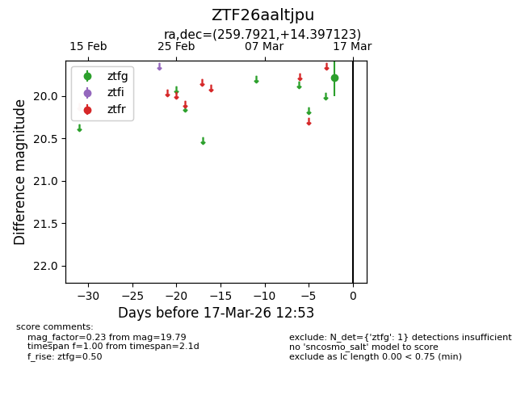
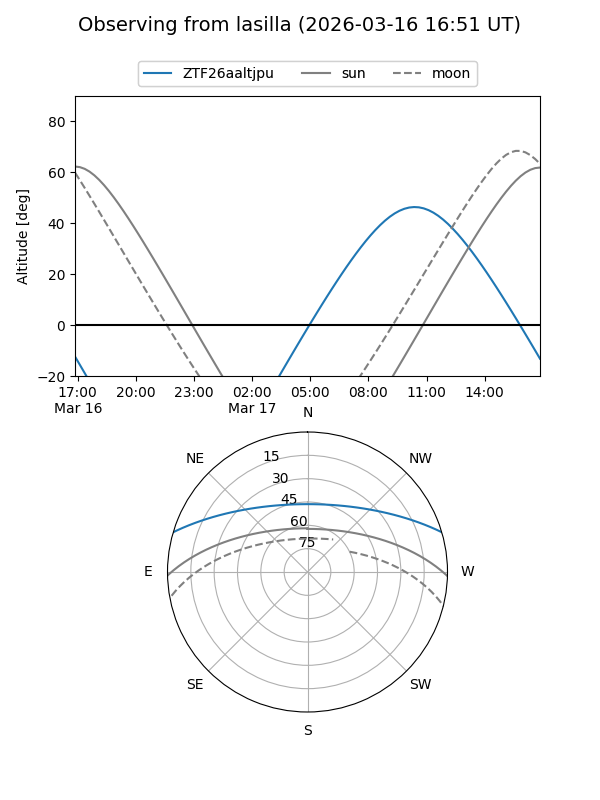
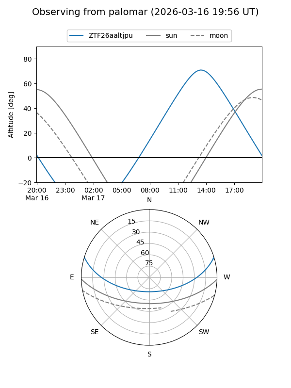

ZTF26aaltjpu
Target ZTF26aaltjpu at 2026-03-17 12:55
Aliases and brokers:
FINK: link
Lasair: link
ALeRCE: link
alt names
ZTF26aaltjpu (ztf,fink_ztf)
Coordinates:
equatorial (ra, dec) = 259.7921,+14.39712
equatorial (HMS+DMS) = 17:19:10.11,+14:23:49.64
galactic (l, b) = (36.0303,+26.81647)
Flags:
Photometry:
last ztfg=19.79
1 ztfg detections
Lightcurve

Visibility


Additional plots